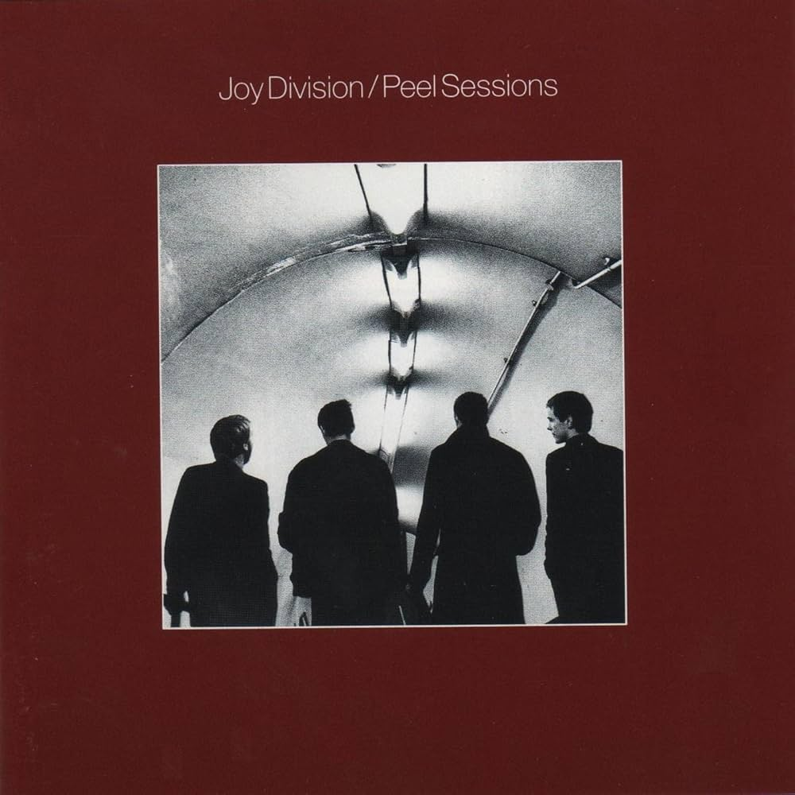

2024 Autumn Radio
音乐与我的秋天
十月：去DC看了JAMC的演出。印象最深刻的是reverence。和朋友一起冲到纽约去看了万青的演出。结尾的永嘉彗星真好听。好多好多人，几近窒息…喜欢秦皇岛的小号。
十一月：和朋友一起去DC看了slowdive的演出，我果然更喜欢他们重组以后的专辑哈哈哈。Rachel Goswell一头半黑半金的头发，在迷幻的音乐中挥舞铃鼓，好美好美。
十二月：和朋友一起去DC看了RIDE的演出（又一次）！音效有点拉不过节奏组一如既往地帅气逼人。
我的秋日专辑
Joy Division - Peel Sessions

‘Love will tear us apart again.’
在巴尔的摩的唱片店the sound garden随便拿的一张，听了以后感觉自己第一次真正地开始爱上Joy Division…
推荐曲目：Love Will Tear Us Apart/24 Hours/She’s Lost Control
Charli XCX - Brat

‘In a place that can make you change/Fall in love again and again/Fall in love again and again…’
Brat summer终于在十一月正式入侵了我的大脑。我喜欢和Caroline Polachek合作的那个版本，原版像夏天，这个版本像深秋。
推荐曲目：360/Apple/Everything is Romantic
Mazzy Star - She Hangs Brightly

‘Superstar in your own private movie/I wanted just a minor part/But I’m no fool/I know you’re cool/I never really wanted your heart’
Hope Sandoval是嗓音最美丽的美国女人，不用多说。感觉这或许是一个我开始听paisley underground的契机…
推荐曲目：Blue Flower/Ghost Highway/Be My Angel
2025的音乐愿望是：1.明年继续弹吉他！我要学乐理！2.ride请不要解散好吗好的